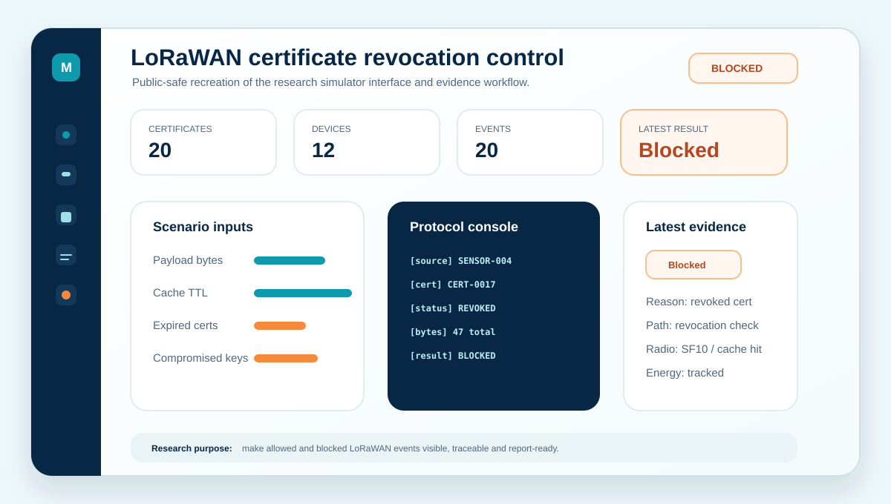
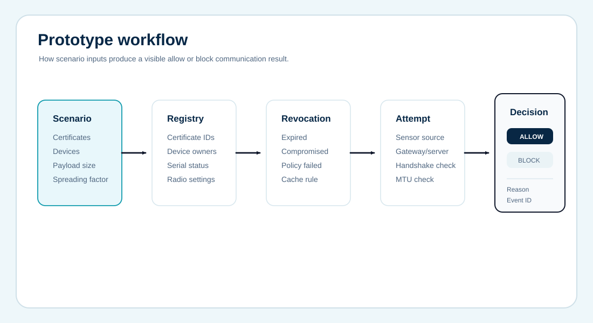
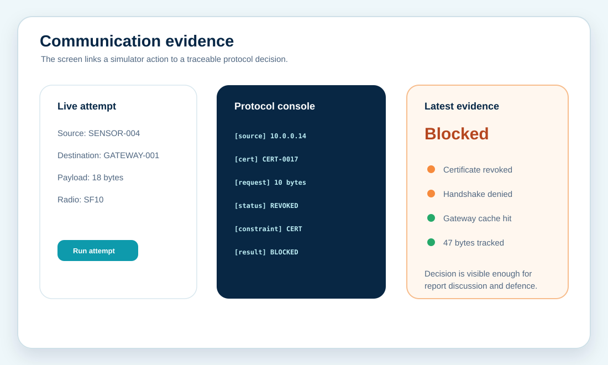
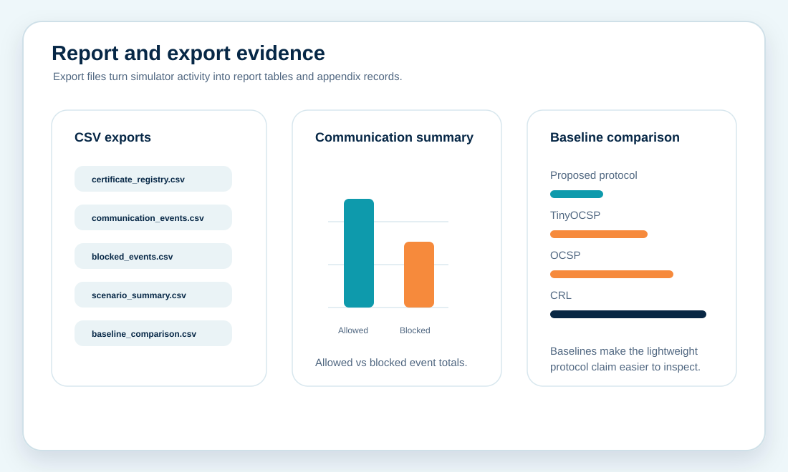

LoRaWAN certificate revocation simulator
A research implementation prototype that turned a lightweight certificate-revocation method into an interactive simulator with scenario controls, communication attempts, event logs and exportable evidence.

The Brief
The research needed a working demonstration layer, not just backend protocol code or static notebook tables.
The prototype had to let a reviewer configure a LoRaWAN scenario, generate certificates and devices, apply revocation rules, attempt communication, and inspect why a message was allowed or blocked. The public version shown here recreates the shape of that work while removing private identifiers and exact project files.
The Challenge
The hard part was making protocol behaviour visible enough for research review without overwhelming the user.
Scenario control
The interface needed clear controls for certificate count, devices, payload size, spreading factor, cache TTL and revocation percentages.
Decision evidence
Allowed and blocked communication had to be tied to certificate status, handshake stage, MTU, cache result and energy evidence.
Exportable proof
The prototype needed CSV outputs that could support report tables, appendices and supervisor review.
Prototype Flow

Set certificates, devices, payload size, cache TTL, spreading-factor mode and revocation percentages.
Create certificate and device registries with serials, owners, status labels and radio settings.
Run one or many communication attempts between sensor and gateway or server endpoints.
Produce event logs, blocked-communication records, summaries and baseline comparison files.
Interface Evidence
The interface was designed so a reviewer could see the protocol decision happen, then trace the supporting evidence.


Outcome
The finished prototype made the research implementation easier to defend because reviewers could operate the simulator and inspect the evidence chain.
This public case study is recreated from the real type of work completed. Private names, exact local paths, raw project screenshots and identifying research files are not published.
Need a research prototype that can be demonstrated?
Send the research topic, required method, available code or dataset status, deadline and the type of demo expected.